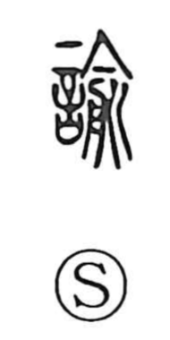

諭

Uncategorized
Kun: satosu | On: yu
to admonish ・ to advise ・ to remonstrate
Explanation
諭 is a phono-semantic character in which 兪 (yu) functions as the phonetic and carries the image of lancing an abscess and draining it into a basin—here the 月 component within 兪 is actually 舟, the form of a tub or plate—signifying recovery from illness or injury. By analogy with such healing, 諭 depicts using words to set someone right: to admonish gently, to advise, and to remonstrate so that faults are corrected. A related graph, 喩 (yu), speaks of figurative expression used in admonition and guidance.